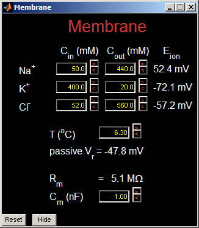
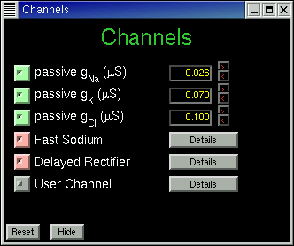
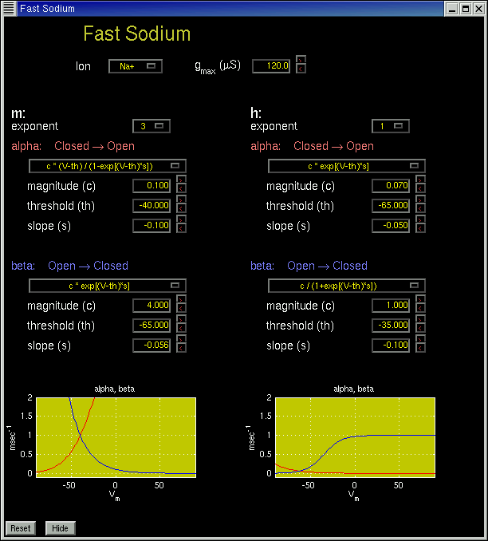
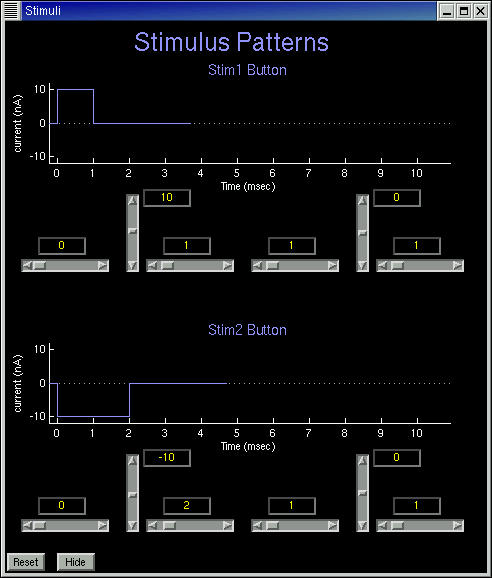
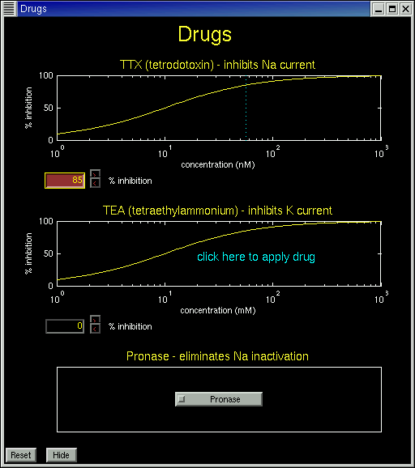

Руководство по работе с HHsim
HHsim — это графическая модель участка возбудимой мембраны нейрона,
основанная на уравнениях Ходжкина–Хаксли. Программа даёт полный доступ
к параметрам Ходжкина–Хаксли, параметрам мембраны, параметрам стимула
и концентрациям ионов и подходит для самых разных
упражнений.
Запуск HHsim
Если вы скачали и установили исполняемую версию HHsim для
Windows, запустить HHsim можно с помощью ярлыка на рабочем столе или пункта
в меню «Пуск». Можно также открыть папку HHsim и щёлкнуть по значку
hhsim.exe.
На macOS запустите HHsim из папки «Программы» (/Applications).
Если вы скачали только исходный код Matlab, запустите Matlab, перейдите
в каталог с исходным кодом и введите «hhsim». Примечание: русской версии HHsim
требуется Matlab R2020a или новее (оригинальной английской версии достаточно Matlab 6).
Главное окно
Главное окно содержит два графика. На большом графике красным цветом показан
мембранный потенциал, а синим — внешние стимулы (импульсы тока).
На меньшем графике показаны три величины — жёлтой, зелёной и голубой
линиями. По умолчанию это переменные Ходжкина–Хаксли m, h и n,
но можно выбрать и другие величины, например токи или
проводимости. Жёлтое, зелёное и голубое раскрывающиеся меню выбирают
переменные для построения.
Нажмите фиолетовую кнопку Стим1 или Стим2, чтобы подать
деполяризующий или гиперполяризующий импульс тока. Кнопки
«Мембрана», «Каналы» и «Стимулы» открывают окна для просмотра и изменения
параметров модели.
Кнопки-переключатели в верхней части окна позволяют выбрать один из трёх режимов: Курсор, Масштаб и Сдвиг. В режиме курсора щелчок по любой линии графика выводит эллиптический курсор, а значение выбранной переменной отображается на панели курсора в правом нижнем углу главного окна. Кнопки управления курсором перемещают его влево или вправо — на один шаг по времени или к ближайшему локальному максимуму или минимуму графика. В режиме масштаба щелчок левой кнопкой мыши по графику увеличивает его, а щелчок правой кнопкой открывает дополнительные действия. Если в режиме масштаба нажать кнопку мыши и протянуть курсор, появится рамка, позволяющая точнее выбрать увеличиваемую область. В режиме сдвига, нажав кнопку мыши и протянув курсор по графику, можно сдвигать его вдоль любой оси.

Снимок экрана оригинальной (английской) версии.
Моделирование запускается всякий раз, когда подаётся стимул или изменяется
значение параметра. Оно останавливается, когда мембранный потенциал, по всей видимости,
достиг асимптоты. Если моделирование остановилось слишком рано, нажмите жёлтую
кнопку Шаг (в оригинале — Nudge), чтобы продвинуть моделирование ещё на несколько
шагов по времени. Нажмите Пуск (зелёная кнопка), чтобы перейти в режим непрерывного
моделирования, и Стоп (красная кнопка), чтобы выйти из него.
Кнопка Очистить очищает графики и сбрасывает время, но
не затрагивает остальные параметры модели. Кнопка Вернуть
возвращает переменные Ходжкина–Хаксли к ранее сохранённому
состоянию. Изначально это состояние покоя; о том, как сохранить
состояние, чтобы вернуться к нему позже, см. страницу
«Управление курсором».
Управление курсором
Кнопка Печать сохраняет графики главного окна в файл
PostScript (EPS), пригодный для печати или вставки в другие
документы. Кнопка Экспорт сохраняет построенные кривые в виде
таблицы в текстовом формате, который читают Microsoft Excel, Matlab (с помощью
функции importdata) и многие другие программы. Если
курсор активен, экспортируется только та кривая, на которой он стоит; иначе
экспортируются все кривые. Текстовый файл записывается в кодировке UTF-8.
Окно «Мембрана»
Окно «Мембрана» позволяет изменять внутренние (Cвн) и внешние (Cнар)
концентрации ионов и настраивать некоторые параметры мембраны.

Окно «Каналы»
Окно «Каналы» даёт доступ к параметрам каждого типа
активных и пассивных каналов. Канал можно временно отключить,
щёлкнув по соответствующему переключателю слева от названия канала.

Для пассивных каналов единственный параметр — проводимость в
микросименсах (мкСм). Для активных каналов — быстрого натриевого канала,
калиевого канала задержанного выпрямления («Задерж. выпрямитель») и активного канала,
задаваемого пользователем, — кнопка Параметры открывает ещё одно окно с
параметрами Ходжкина–Хаксли этого канала. Ниже показано окно быстрого
натриевого канала.

Окно «Стимулы»
Окно «Стимулы» задаёт параметры двух внешних стимулов,
Стим1 и Стим2, каждый из которых представляет собой либо одиночный импульс
тока, либо последовательность из двух независимо настраиваемых импульсов.

Окно «Препараты»
Окно «Препараты» позволяет применить любой из трёх препаратов: TTX (тетродотоксин), который
подавляет натриевый ток; TEA (тетраэтиламмоний), который подавляет калиевый
ток; и проназу, которая устраняет инактивацию натриевых каналов.
Пока применяется какой-либо препарат, кнопка «Препараты» в главном окне
окрашена в жёлтый цвет вместо обычного серого.

Режим фиксации потенциала
HHsim запускается в режиме «Регистрация потенциала». Чтобы перейти в режим «Фиксация потенциала» (voltage clamp), воспользуйтесь раскрывающимся меню в правом нижнем углу главного окна.
Управление в режиме фиксации потенциала
На главную страницу HHsim
Эта работа частично поддержана грантом Национального научного фонда США (NSF)
DGE-9987588. Любые мнения, выводы или рекомендации, изложенные здесь, принадлежат
авторам и не обязательно отражают точку зрения Национального научного фонда.
Дэйв Турецки (автор оригинала)
Последнее изменение оригинала: Wed Nov 5 01:03:38 EST 2003